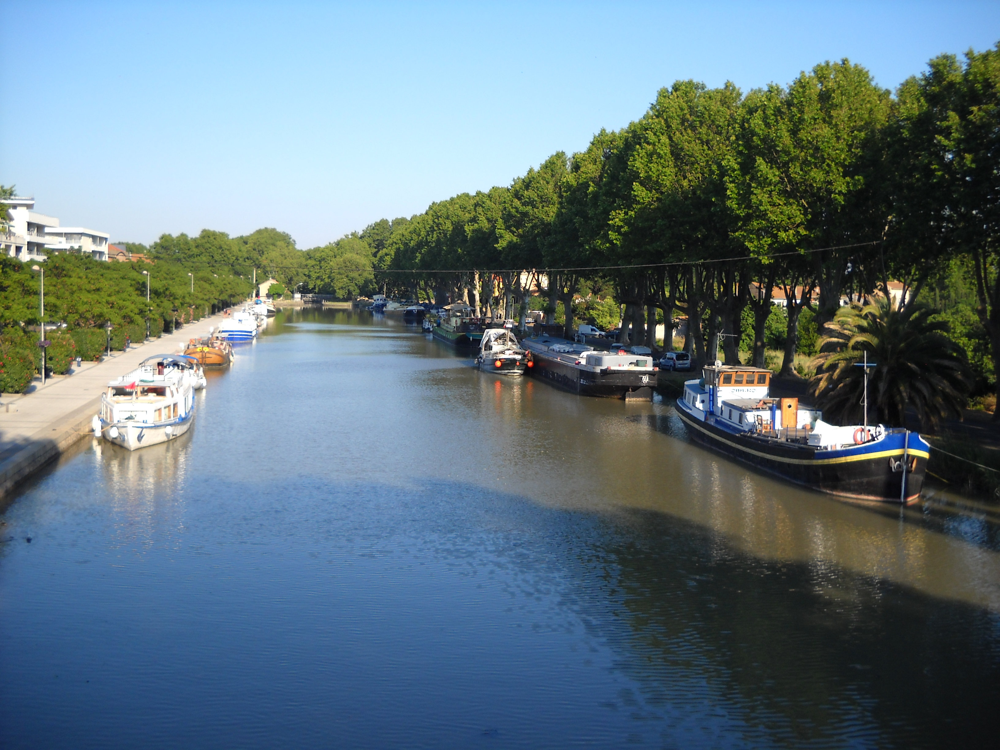

Banglion´s pool from one of the foot bridges, the residential part on the left, the industrial on the right, hidden behind a line of trees.
Not really, the picture is of the Quai du Port Neuf in Béziers, part of the Canal du Midi.  Canal du Midi port by Beziers, France